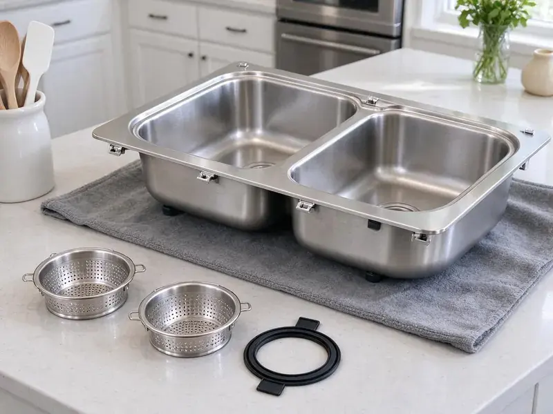

Grease Trap Installation in Schofield Barracks, HI
Licensed plumbers setting grease traps for restaurants and commercial kitchens in Schofield Barracks, HI.
- Permit Paperwork Handled
- No-Cost Estimates
- Local Hawaii Plumbers
- Flow Control Included
Book a Grease Trap Site Visit in Schofield Barracks, HI
Call HKL Plumbing at (808) 649-6718 and a tech will look at your kitchen this week.
Commercial Grease Trap Installers in Schofield Barracks, HI
Grease traps fail inspections for boring reasons. Usually it is a missing flow control or a trap that is a size too small. Both of those are avoidable. We install grease traps in Schofield Barracks with those checks done before the inspector shows up, which is the easiest way to open on schedule and stay open.
Our expertise includes:
- Traffic-rated lids for drive lanes
- Permit filing and inspection scheduling
- Sampling ports where the sewer authority asks

Additional Kitchen Plumbing Services in Schofield Barracks, HI
Our kitchen plumbing services in Schofield Barracks, HI cover sinks, disposals, dishwashers, and grease traps so your kitchen keeps running without backups or leaks.


Customers
Why Choose HKL Plumbing for Grease Trap Installation in Schofield Barracks, HI?
Code requires a flow control fitting on most hydromechanical traps, and we still find kitchens running without one. Without it, a dumped sink overwhelms the unit. We install the fitting, vent the air intake to code and test the trap with a full sink drain before we leave, so you know it handles your worst case.
- Minimal Downtime, Overnight and closed-day installs keep you serving.
- Certified Units, We install traps certified to PDI G-101 or the matching ASME standard.
- Written Labor Warranty, Our workmanship coverage is on paper before we start.
Citywide Coverage
Neighboring towns around Schofield Barracks often run separate sewer programs with different grease rules. One town may want a sampling box while the next does not. We match each install to the program that will inspect it. Paperwork follows the rules too.
Experienced Team
Ask any of our plumbers why a trap needs a flow control and you will get a straight answer, not a sales pitch. Our crew walks you through the sizing in plain language. Your kitchen manager also gets a quick lesson on how to open the lid, scrape the baffles and log the cleaning for the FOG inspector. It takes ten minutes.
Safety-First Approach
Excavations five feet or deeper need shoring or a trench box under OSHA rules, and many interceptor holes go deeper than that. A trench box comes with the excavator. We also call in utility locates before the first shovel goes in, since a gas line next to a grease tank is the last thing anyone wants to find by accident.
Trusted Certified Schofield Barracks Plumbing Services Professionals
At HKL Plumbing, we are proud to offer certified plumbing services throughout Schofield Barracks, HI. Credentials matter in this trade. Every repair, install and maintenance visit follows strict safety and quality rules, and the plumbers doing the work carry recognized industry credentials.
Call Us Now PHCC Plumbing Contractor Recognition
PHCC Plumbing Contractor Recognition Better Business Bureau (BBB) Accreditation
Better Business Bureau (BBB) Accreditation Angi Certified Pro
Angi Certified Pro ISO 9001 Quality Management Certification
ISO 9001 Quality Management CertificationRestaurant Grease Trap Installation in Schofield Barracks, HI
Zurn Grease Trap Installation in Schofield Barracks
Zurn's indoor grease interceptors cover the common sizes from small under-sink units up to 100 GPM, and we set enough of them to know where the gaskets give trouble. The lid gasket is the usual leak point after a few years. We keep spares on the truck. Most Zurn units come with a flow control fitting, and we mount it on the inlet side at the height the instructions call for.

Grease Trap Replacement and Upgrades in Schofield Barracks
Plastic and steel traps both wear out, just in different ways. Steel rusts at the seams and the baffle welds. Plastic cracks. We remove the old unit, set the new one in the same spot when it fits, and use no-hub couplings so future work is easier.
Under-Sink Grease Trap Setup in Schofield Barracks, HI
Small cafes and coffee bars often get by with a 10 to 25 GPM hydromechanical trap tucked under the prep sink or beside it. It sits on the floor or in a recess, with the flow control fitting on the inlet side. Clearance matters most. We leave room to pull the lid and baffle without unhooking the sink, because a trap nobody can open is a trap nobody cleans.
Residential Grease Interceptor Setup in Schofield Barracks, HI
Homes rarely need a grease trap, though some do. We see them in licensed home kitchens and in houses where the sewer lateral keeps clogging with grease. A small 4 to 7 GPM unit under the kitchen sink catches most of it, and cleaning takes about ten minutes with a spatula and a bucket. Check with your local health office first.
Commercial Grease Trap Installation in Schofield Barracks
A commercial kitchen with a three-compartment sink, a pre-rinse station and two floor sinks can push 50 gallons a minute of greasy water at the dinner rush. We size the trap to that peak flow, not the average. Undersized traps are the usual failure. The install covers setting the unit, piping the inlet and outlet, and adding the vented flow control the maker specifies.
Hydromechanical Grease Trap Installation in Schofield Barracks
Flow rating is the number that matters on a hydromechanical trap, and it has to match the fastest-draining fixture combination in your kitchen. A 50 GPM trap on a line that sees 75 GPM will pass grease every lunch rush. We do the math on paper. The sink volume and drain-down time give the GPM number, and we show you the calculation.
Restaurant Grease Trap Compliance in Schofield Barracks, HI
Most sewer authorities run a FOG program with an inspector who opens your trap and checks your pump-out manifests against the schedule they set. Fail that and you can face fines or a surcharge on your sewer bill. We install to pass. We add a sampling port if they require it and size to the authority's own formula.

Commercial Kitchen Grease Trap Installs in Schofield Barracks
Every commercial install starts with a fixture list. The tech walks the kitchen and writes down every fixture that drains to the trap and how fast each one empties. From there we pick a hydromechanical unit or a gravity tank and figure out where it can sit with a straight shot to the building sewer. Fewer bends, fewer clogs.
Local Grease Trap Installers in Schofield Barracks, HI
Restaurant owners around Schofield Barracks call us for new installs and the occasional emergency swap, and the phone at (808) 649-6718 is answered seven days a week. Weekend calls get a real person. For a backed-up trap we try to have a tech on site the same day so you do not lose a dinner service.
Having a plumber near Schofield Barracks who already knows your trap makes the next call faster. Our dispatch line is (808) 649-6718. Each install goes in our records with the model and the date. Next time you need service, we already know what you have.
HKL Plumbing at a Glance
- Licensed and insured plumbers serving Schofield Barracks, HI
- Same-day appointments and 24/7 emergency response
- Clear written estimates, no hidden fees
- 4.8-star rated by 529+ Hawaii customers
Schofield Barracks Map
Schofield Barracks Information
- Population
- 14,904
- Area codes
- Local
- Service area
- Schofield Barracks and communities within 40 miles
- Nearby
- Wahiawa, Mililani Town, Mililani Mauka, Royal Kunia
A grease trap in a Schofield Barracks, HI kitchen has to match the peak flow of the sinks that drain to it, or grease goes straight to the sewer. Warm temperatures all year mean water heaters work less hard, but moisture under sinks and in walls can lead to mold and rot if leaks go unnoticed.
Talk to a Plumber
Reach out to HKL Plumbing for reliable plumbing work done by licensed pros in Schofield Barracks, HI.
Our Specialized Plumbing Services in Schofield Barracks, HI
At HKL Plumbing, we handle the full list of plumbing services across Schofield Barracks, HI. From leak detection to full system installs, our team works fast and charges fair prices on homes and commercial properties alike. Take a look at our core services below:


Our Grease Trap Installation Process in Schofield Barracks, HI
Most of a grease trap job is planning. The install itself is often a single day in Schofield Barracks.
Request a Quote
Call HKL Plumbing at (808) 649-6718 for a site visit. Bring your plans if it is a new build-out.
Size and Permit
We size the trap from your real fixture list and file the permit and sewer authority review.
Install and Inspect
The crew installs, tests and meets the inspector. You get copies of the paperwork.
Frequently Asked Questions About Grease Trap Installation in Schofield Barracks
Expect roughly $1,500 to $4,000 for a small indoor trap and $7,000 to $20,000 or more for an outdoor gravity interceptor. A floor-recessed trap costs more than one set on the floor. Location drives the rest. A tank under a parking lot needs a traffic-rated lid and asphalt repair, which a tank in a grass strip does not.
We start with a fixture list and the drain rate of each fixture. Each sink's volume and drain time give a flow rate, and the dish machine's spec sheet gives its flow. That gives the GPM figure. Indoor units match the GPM, and outdoor tanks get sized by volume and retention.
Coverage comes from two places. Your trap carries a factory warranty that varies by brand and material. Our written labor warranty covers the joints we made and how we set the unit. Damage from skipped cleanings falls outside it.
Size comes from flow, and flow comes from your fixtures. We measure each connected fixture and calculate the gallons per minute they can send at once. Gravity tanks use volume instead. For those, the local pretreatment program often has its own formula based on seats or fixture units, and we use theirs.
In everyday talk the two names get swapped. Strictly, a grease trap is the small indoor unit rated in gallons per minute, and an interceptor is the large tank rated in gallons of capacity. Codes vary on the wording. Some plumbing codes call both of them interceptors and separate them as hydromechanical and gravity, so we use whatever terms your permit office uses.
That depends on the code your jurisdiction follows and the type of trap. Some programs require dish machines to drain through the interceptor, while others keep high-temperature discharge away from certain hydromechanical units because hot water and detergent can push emulsified grease through. We check before we pipe it. Garbage disposers are usually not allowed to drain into a grease interceptor.
You get the manufacturer's warranty on the unit and a written labor warranty from us on the installation. Factory terms vary, so we hand you the registration card or file it for you. Keep your cleaning logs. Makers may ask for service records before paying a claim.
Almost always, yes. You will usually need a plumbing permit plus a sign-off from the sewer authority's pretreatment program. We pull the permit, submit the sizing calculation and schedule the rough and final inspections. Expect an inspector on site.
What People Are Saying About Our Plumbing Experts?

Jessica T.
We were adding a gas range in a kitchen remodel and needed a new line run from the meter. The plumber pulled the permit, ran the pipe through the crawl space, and had it inspected and approved within the week.
Gas Line Repair · Mililani Town, HI
Kevin O.
Before buying our house I paid for a sewer camera inspection. HKL Plumbing found a belly in the line that held standing water about forty feet from the cleanout. We used the video to get the sellers to fix it before closing.
Sewer Camera Inspection · Waipio, HI
Carlos V.
Our house still had galvanized pipe, and upstairs the shower was a trickle. The crew repiped everything in PEX over three days and patched every drywall hole before they left. The pressure difference is night and day.
Repiping · Mililani Mauka, HI
Paul B.
Our pit pump ran nonstop even in dry weather. The plumber found the check valve was stuck open, so the same water kept cycling back into the pit. New valve, new float switch, done in an hour. It runs quiet now.
Sump Pump · Schofield Barracks, HI
Karen W.
After our third pinhole leak in copper, we stopped patching. HKL Plumbing gave us a written plan room by room and repiped the house in PEX while we stayed in it. The crew covered our floors every morning and cleaned up every night.
Repiping · Mililani Town, HIMark T.
The floor drain in our office break room backed up every few weeks. The plumber ran a cable, then put a camera down and found roots at a joint about thirty feet out. Seeing it on the screen made the decision easy.
Drain Cleaning · Schofield Barracks, HI